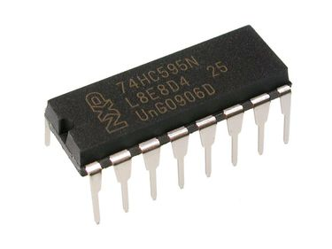

CPU ( Control Processing Unit )
CPU atau Unit Pemrosesan Pusat, adalah otak dari komputer yang digunakan untuk mengolah data dan melakukan program-program yang berjalan sesuai intruksi pengguna. Sejak munculnya komputer elektronik tahun 1970-an, CPU telah mengalami transformasi signifikan. Awalnya, CPU tunggal digunakan untuk menjalankan program. Namun, dengan perkembangan teknologi, CPU multi-inti menjadi umum, memungkinkan komputer untuk melakukan tugas lebih cepat dan lebih efisien.
Ada beberapa komponen penting dalam CPU, yaitu ;
- ALU ( Arithmetic Logical Unit) adalah komponen penting dalam unit pemrosesan pusat (CPU) pada komputer. ALU bertanggung jawab untuk melakukan operasi aritmatika (seperti penjumlahan, pengurangan, perkalian, dan pembagian) serta operasi logika (seperti AND, OR, XOR, dan NOT) dalam sistem komputer.
- Operasi Aritmatika : ALU dapat melakukan operasi aritmatika dasar seperti penjumlahan, pengurangan, perkalian, dan pembagian. ALU menerima data dari register CPU, melakukan operasi matematika pada data tersebut, dan menghasilkan hasilnya.
- Operasi Logika : ALU juga dapat melakukan operasi logika seperti AND, OR, XOR, dan NOT. Operasi logika digunakan untuk memanipulasi data biner atau bit-bit data. Misalnya, dalam operasi AND, ALU membandingkan bit-bit yang sesuai dari dua input dan menghasilkan output yang merupakan hasil dari bit-bit yang dinyalakan dalam kedua input.
- Perbandingan dan Pemrosesan Data : ALU digunakan untuk membandingkan data dalam CPU. Misalnya, dalam pernyataan “apakah A sama dengan B?”, ALU akan membandingkan nilai-nilai dari register A dan B menggunakan operasi perbandingan, seperti perbandingan sama (equal) atau perbandingan lebih kecil (less than). Hasil perbandingan ini digunakan dalam pengambilan keputusan dan pengendalian aliran program.
- Operasi Bitwise : ALU juga dapat melakukan operasi bitwise pada data. Operasi bitwise memanipulasi bit-bit individu dalam suatu nilai. Contohnya, operasi seperti shift (menggeser bit ke kiri atau kanan) dan rotasi (memutar bit) dapat dilakukan oleh ALU.
- Penanganan Overflow dan Carry : ALU juga bertanggung jawab untuk mendeteksi dan mengatasi situasi overflow (melebihi batas maksimum yang dapat diwakili oleh bit) dalam operasi aritmatika dan carry (nilai yang harus dibawa atau ditambahkan ke bit berikutnya) dalam operasi penjumlahan.
- Register: Register adalah komponen yang digunakan untuk menyimpan sementara data yang akan dioperasikan oleh ALU. Register menyimpan operand, hasil operasi, dan data lain yang dibutuhkan selama proses pemrosesan.
- Pemilih (Multiplexer): Pemilih adalah komponen yang memungkinkan ALU memilih input yang tepat untuk operasi yang akan dilakukan. Pemilih digunakan untuk memilih operand dari register dan sinyal kendali yang diperlukan untuk operasi.
- Dekoder: Dekoder mengubah kode operasi yang diberikan menjadi sinyal-sinyal kendali yang diperlukan untuk melakukan operasi yang sesuai. Dekoder memetakan instruksi atau kode operasi ke fungsi dan kontrol yang sesuai dalam ALU.
- Rangkaian Aritmatika: Rangkaian aritmatika dalam ALU melibatkan penjumlahan, pengurangan, perkalian, pembagian, dan operasi aritmatika lainnya. Rangkaian ini terdiri dari logika kombinasi dan gerbang logika yang memungkinkan ALU melakukan operasi aritmatika pada data biner.
- Rangkaian Logika: Rangkaian logika dalam ALU melibatkan operasi logika seperti AND, OR, XOR, dan NOT. Rangkaian logika ini memungkinkan ALU untuk melakukan operasi logika pada bit-bit data.
- Pembanding (Comparator): Pembanding adalah komponen yang digunakan untuk membandingkan dua nilai dan menghasilkan sinyal yang menunjukkan hasil perbandingan (misalnya, lebih besar, lebih kecil, atau sama). Pembanding sering digunakan dalam operasi pemrosesan data dan pengambilan keputusan.
- Rangkaian Penanganan Overflow dan Carry: Rangkaian ini mendeteksi dan menangani situasi di mana operasi aritmatika menghasilkan overflow (melebihi kapasitas bit) atau carry (nilai yang harus dibawa atau ditambahkan ke bit berikutnya) yang diperlukan dalam operasi penjumlahan.
- Bus Data: Bus data adalah jalur komunikasi yang digunakan untuk mentransfer data antara komponen-komponen dalam ALU, seperti register, pemilih, dan rangkaian aritmatika/logika. Bus data memungkinkan transfer data secara paralel.
- Control Unit bertugas untuk mengontrol jalannya program sehingga terjadi sinkronisasi kerja antar komponen dalam menjalankan fungsi-fungsi operasinya.
- Register merupakan penyimpanan kecil yang memeilii kecepatan akses yang tinggi, yang digunakan untuk menyimpan data atau intruksi yang diproses. Memory ini bersifat sementara (volatile).
 Beberapa operasi yang dijalankan oleh sebuah register, yaitu ;Gambar 4 - Register
- Fetch digunakan untuk mengambil intruksi yang diberikan pengguna.
- Decode digunakan untuk menafsirkan intruksi yang bertujuan agar CPU mengetahui operasi mana yang akan dilakukan pada intruksi.
- Execute dilakukan oleh CPU. Output yang dihasilkan CPU disimpan ke dalam memeori dan ditambilkan di layar pengguna.
Peranan ALU dalam CPU
ALU (Arithmetic Logic Unit) memiliki peran penting dalam unit pemrosesan pusat (CPU) komputer. Berikut ini adalah beberapa peran utama ALU, yaitu ;
Komponen dalam ALU
Jenis – Jenis Register
Ada banyak jenis register komputer yang tersedia untuk menjalakan intruksi pada komputer. Beberapa di antaranya, yaitu ;
- MAR ( Memory Address Register )
- MDR (Memory Data Register)
- MBR (Memory Buffer Register)
- PC (Program Counter)
- Accumulator
- Index Register
- Instruction Register
Register ini digunakan untuk mengakses data dan intruksi dari memory selama fase eksekusi suatu intruksi. Prosesor secara ekstensif menggunakan MAR untuk membaca atau menyimpan semua jenis data dalam register jenis ini. Register ini biasa digunakan untuk membaca dan menulis data dari memory.
Selama proses membaca, alamat diambil dari register untuk mengakses data dan kemudian data tersebut ditempatkan ke dalam jenis register lain yang disebut register data memory (MDR). Selama proses penulisan, data diekstraksi dari MDR dan kemudian disimpan di alamat yang terletak di MAR. Register MAR selalu menyimpan alamat lokasi berikutnya dimana operasi data akan dilakukan.
MDR adalah register yang berisi data yang akan disimpan di penyimpanan komputer (misalnya RAM), atau data setelah diambil dari penyimpanan komputer. Register ini bertindak seperti buffer dan menyimpan apa pun yang disalin dari memory yang siap digunakan oleh prosesor. MDR menyimpan informasi sebelum masuk ke decoder. MDR yang berisi data yang akan ditulis atau dibaca dari lokasi yang dituju. MDR adalah register dua arah. Data diambil dari memory rekaman searah dan ditempatkan di MDR. Ketika ada perintah write maka data yang akan ditulis akan ditempatkan di MDR register CPU lain, kemudian akan memasukkan data tersebut ke dalam memory. Memory register data adalah separuh antarmuka minimal antara firmware dan penyimpanan komputer, separuh lainnya adalah MAR. MDR dan MAR saling melengkapi dan bekerja sama untuk melakukan operasi baca dan tulis data.
Register ini digunakan untuk menyimpan informasi dan data yang dapat dibaca atau ditulis ke memory komputer. Fungsi utama MBR adalah untuk menyimpan berbagai instruksi komputer dan data yang dapat ditransfer antar memory komputer. Register MBR adalah register terkait memory utama untuk prosesor unit pemrosesan karena register ini mampu melakukan operasi terkait memory dengan sangat cepat.
Program Counter digunakan untuk menunjukkan posisi terkini dari urutan program dalam sistem komputer. Ketika sebuah instruksi diambil dari memory, nilai penghitung program bertambah satu dan menunjuk ke instruksi berikutnya yang akan dieksekusi oleh prosesor CPU. Penghitung program digunakan untuk menyimpan alamat instruksi langsung yang akan dieksekusi.
Accumulator adalah jenis register CPU yang digunakan untuk menyimpan hasil logis atau sementara. Hasil sementara yang diperoleh dari CPU dapat dengan mudah disimpan di register accumulator. Kecepatan akses register accumulator jauh lebih cepat dibandingkan dengan memory utama.
Register ini adalah register yang digunakan untuk mengubah alamat operan selama eksekusi program. Register ini banyak digunakan untuk melakukan operasi matematika matriks atau vektor. Register indeks dapat digunakan dalam pengalamatan tidak langsung ketika diperlukan modifikasi untuk mengalamatkan instruksi.
Register instruksi adalah jenis lain dari register CPU yang digunakan untuk menyimpan instruksi yang sedang dieksekusi atau akan didekode. Di dalam prosesor, register-register ini menyimpan setiap instruksi di sana dan kemudian dapat dieksekusi oleh prosesor.
Terdapat 4 komponen struktural utama dalam arsitektur sistem komputer, yaitu ;
Ada beberapa komponen utama yang harus ada di setiap komputer agar komputer tersebut dapat digunakan. Komponen-komponen tersebut, yaitu ;

- Central Processing Unit (CPU) : Mengontrol pengoperasian komputer dan menjalankan fungsi pemrosesan data disebut sebagai prosesor.
- Main memory : Menyimpan struktur data.
- I/O (Input/Output) : Memindahkan data antara komputer dan lingkungan luar.
- System Interconnection : Sejumlah mekanisme yang menyediakan komunikasi antara CPU, memori utama, dan I/O. Contoh seperti ; bus sistem, yang terdiri dari sejumlah kabel penghantar yang disambungkan ke seluruh komponen lain.
Kesimpulannya :
Sejarah komputer, konsep gerbang logika, dan peran sentral CPU adalah bagian integral dari perkembangan teknologi komputer. Dari perangkat mekanis hingga komputer canggih saat ini, pemahaman tentang asal-usul dan evolusi ini membantu kita menghargai bagaimana teknologi komputer telah mengubah dunia di sekitar kita. Dengan terus berlanjutnya inovasi, masa depan komputasi menjanjikan kemajuan yang lebih besar yang akan membentuk cara kita bekerja, belajar, dan berinteraksi dengan teknologi.